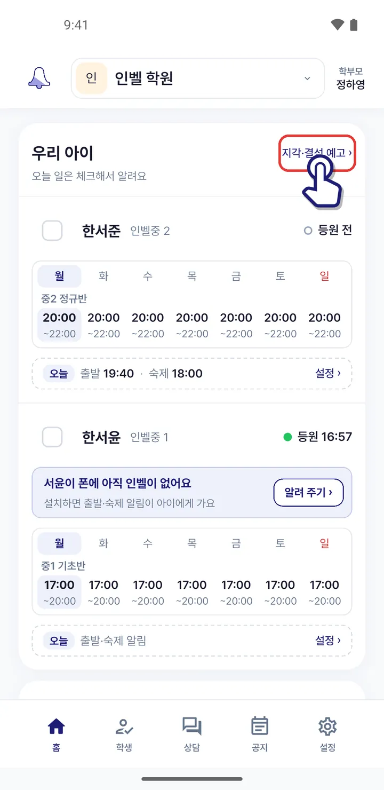
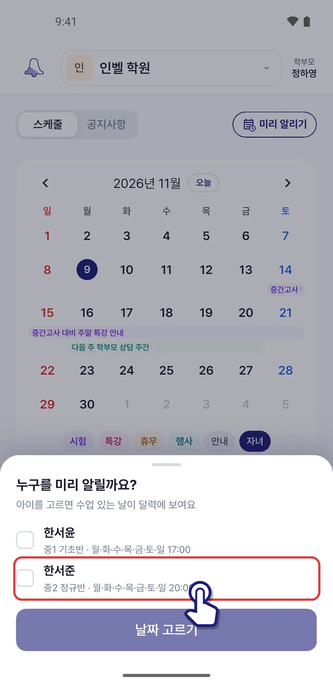
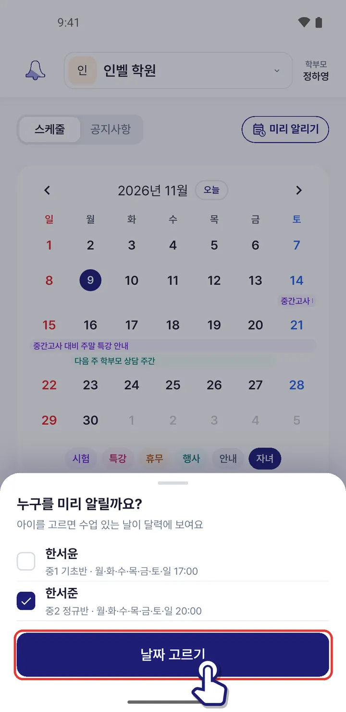
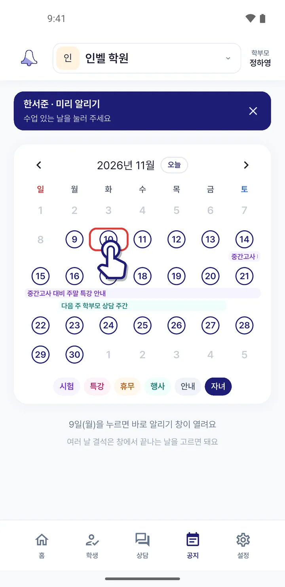
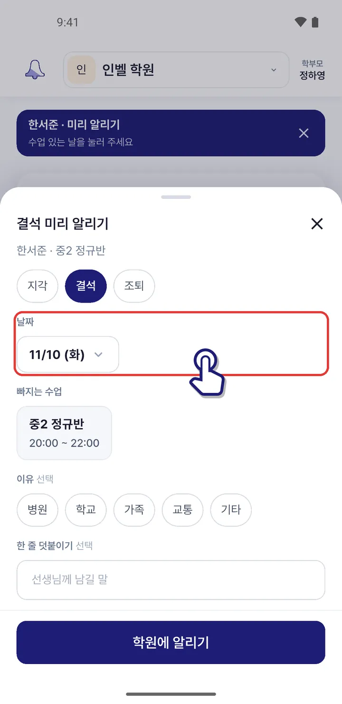

다른 날이나 며칠 동안 빠져요
「지각·결석 예고」에서 달력의 날짜를 눌러 미리 알리면 여러 날도 한 번에 보낼 수 있어요.
1학원 홈 「우리 아이」 카드 오른쪽 위 「지각·결석 예고」를 눌러요.

2미리 알릴 아이를 체크해요.

3「날짜 고르기」를 눌러요.

4달력에서 테두리가 있는 날(수업 있는 날)을 눌러요.

5며칠 빠지면 「날짜」를 눌러 끝나는 날을 고르고, 「학원에 알리기」를 눌러요.

알린 날은 달력에 표시돼요. 계획이 바뀌면 그날을 눌러 예고를 취소할 수 있어요.
비슷한 상황
앱 1.0.71 화면 기준